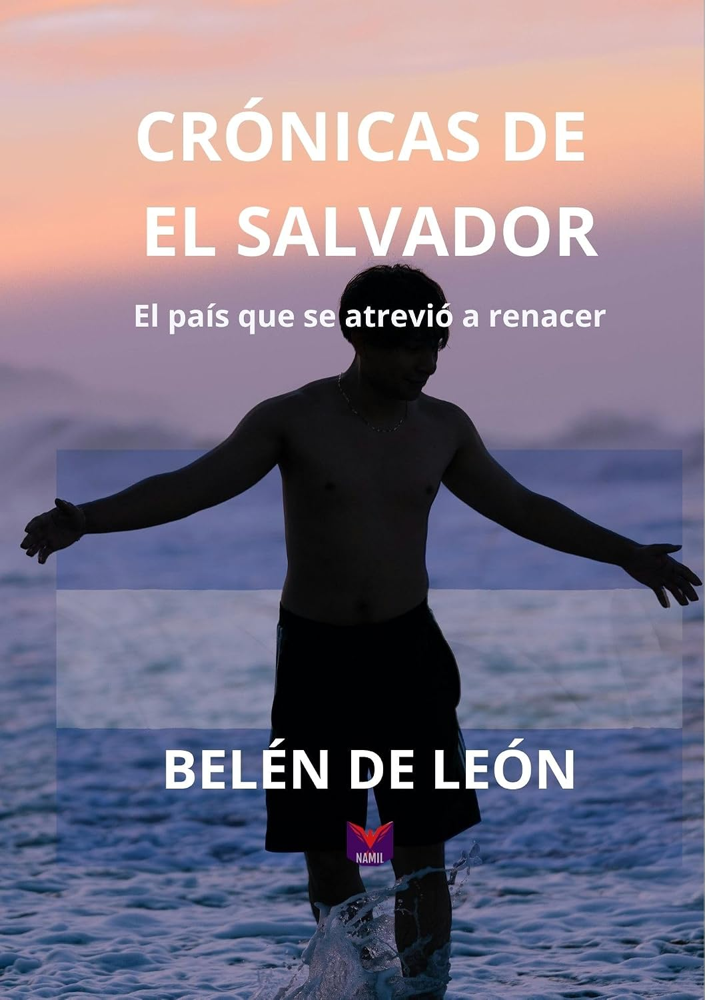

Crónicas de El Salvador
El país que se atrevió a renacer.
Una crónica testimonial, analítica y, sobre todo, profundamente humana sobre la historia reciente de El Salvador. Los años que viví en el país durante la posguerra y mi vínculo en el tiempo hasta el presente me brindaron la oportunidad de reconstruir la violencia que mutó tras la firma de la paz en 1992, la infiltración de las pandillas en las instituciones, en toda la sociedad, y el camino recorrido hasta el día de hoy por un pueblo que decidió luchar por sus vidas, su libertad y su dignidad.
Comprar en Amazon (se abre en una nueva pestaña)